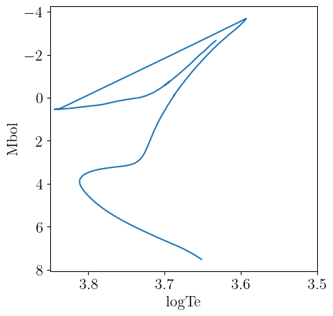
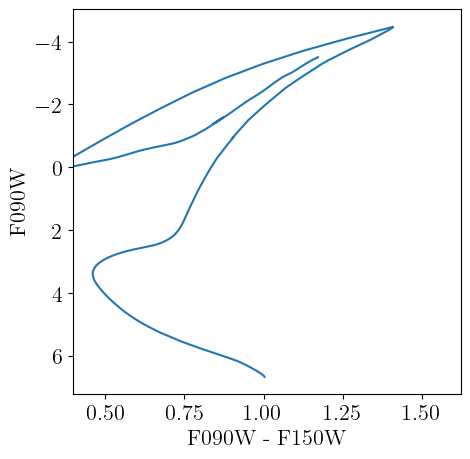

BaSTIv1
Here we describe the interface we provide to the older BaSTI stellar models presented in Pietrinferni et al. [15], Pietrinferni et al. [16] and Pietrinferni et al. [17] – as there are newer BaSTI models (e.g., Hidalgo et al. [18]), we describe these older models as BaSTIv1 to differentiate them. BaSTIv1 specific code is housed in the BaSTIv1 submodule, which can be accessed as
using StellarTracks.BaSTIv1 # load all exported methods
using StellarTracks.BaSTIv1: BaSTIv1Library, X, Y, Z # load specific methodsData Acquisition
The tracks will be downloaded automatically using DataDeps.jl the first time you try to access them. The main access point we provide is BaSTIv1Library, which will load and make available the full library of stellar tracks. The first time you call this method, you will be prompted to download the required data files. The total data volume is ~100 MB. Information on customizing the install location is available here. The data can be uninstalled by running using DataDeps; rm(datadep"BaSTIv1"; recursive=true). With all the tracks available, we are able to perform operations like interpolating isochrones at any age and metallicity within the BaSTIv1 parameter space.
Grid Properties
The BaSTIv1 model grid contains models for the following metal mass fractions:
BaSTIv1.zgrid13-element Vector{Float32}:
1.0f-5
0.0001
0.0003
0.0006
0.001
0.002
0.004
0.008
0.01
0.0198
0.03
0.04
0.05which correspond to the following values of [M/H]:
MH.(BaSTIv1Chemistry(), BaSTIv1.zgrid)13-element Vector{Float64}:
-3.265322279085031
-2.265198008877049
-1.787800439117812
-1.4863556884822937
-1.263953315381199
-0.9615361654818739
-0.6577184982873268
-0.3510588974280342
-0.2513065091854809
0.05956189782615229
0.2553114184534435
0.39578544303058627
0.5088071641379128The grid contains models with and without convective overshooting during core H-burning (function arguments canonical=false and true, respectively), with and without a synthetic AGB extension (agb = true and false, respectively), and different values of the Reimers mass loss parameter η = 0.2, 0.4. Values of Z=1e-5, 0.05 (models presented in Pietrinferni et al. [17]) are only available without AGB extension (agb=false) with Reimers mass loss parameter η=0.4. α-enhanced models with [α/Fe] ≈ 0.4 (presented in Pietrinferni et al. [16]) are also available.
Note that the BaSTIv1 stellar models at best include initial stellar masses from 0.5 to 10 solar masses. The canonical models (canonical = true) without AGB extensions (agb = false) and η=0.4 seem to have the best mass sampling, and the α-enhanced set is also fairly good. Many of the other parameter sets have minimum masses closer to 1 solar mass, which can be troublesome for applications in stellar populations. None of the model sets reach the lower main sequence that is important when modeling very nearby stellar populations. Nor do they include very high-mass stars (e.g., O-type stars) that can be important when studying populations with high present0-day SFRs.
The BaSTIv1 grid includes models with scaled-solar abundance patterns as well as α-enhanced models with an average [α/Fe]=0.4 (presented in Pietrinferni et al. [16]). These α-enhanced models are useful for modeling low-metallicity stars that formed prior to significant iron enrichment from type Ia supernovae. These stars are most common in the Galactic halo and low-mass dwarf galaxies. Note that the conversion between metal mass fraction $Z$ and logarithmic metal abundance [M/H] is the same for the scaled-solar models as for the α-enhanced models, however the iron abundance [Fe/H] is not the same as [M/H] – see Table 1 of Pietrinferni et al. [16].
The BaSTIv1 models are also differentiated by whether they include convective overshooting during central H-burning. So-called "canonical" models do not including overshooting, while "non-canonical" models do include a convective overshooting treatment (see section 3 of Pietrinferni et al. [15]). Inclusion of convective overshooting during central H-burning mainly changes the main sequence turn-off morphology and generally results in better fits to simple stellar populations like globular clusters. For methods in this module that take a canonical::Bool argument, a value of canonical=true indicates you want to use the "canonical" stellar models, while a value of canonical=false means you want to use the "non-canonical" models that include convective core overshooting.
Examples
First we load the full BaSTIv1 library, which is downloaded via DataDeps.jl if not already available.
using StellarTracks.BaSTIv1
p = BaSTIv1Library(0.0, true, false, 0.4)Structure of interpolants for the older BaSTI library of canonical stellar tracks without AGB extension, [α/Fe]=0.0, η=0.4. Valid range of metallicities is (-3.265322279085031, 0.5088071641379128).Now we use the BaSTIv1Library to interpolate an isochrone at log10(age [yr]) = 10.05 and logarithmic metallicity [M/H]=-1.234. The isochrone is returned as a NamedTuple.
iso = isochrone(p, 10.05, -1.234)(eep = [64, 65, 66, 67, 68, 69, 70, 71, 72, 73 … 1990, 1991, 1992, 1993, 1994, 1995, 1996, 1997, 1998, 1999], m_ini = [0.5026663115949598, 0.5050525930530236, 0.5074027268519152, 0.5097175356494165, 0.5119981336544912, 0.5142454450233432, 0.5164607332607577, 0.518644337715317, 0.520797707177782, 0.5229214011360276 … 0.8488850433498194, 0.8488865753597156, 0.8488875703593902, 0.8488888338641759, 0.8488900436679392, 0.8488913071727248, 0.84889257067751, 0.8488941026874065, 0.8488953248668337, 0.8488963735675304], logTe = [3.651357286070527, 3.652267406573711, 3.653189943910149, 3.654120424450518, 3.6550586806197107, 3.6560055084893768, 3.656958275482705, 3.657912060172796, 3.6588766468160934, 3.6598453833068723 … 3.645484683762549, 3.644452747957994, 3.6433868613795024, 3.642243334829744, 3.6409660969014457, 3.6395294851472593, 3.6378430602248297, 3.636050943632454, 3.634398835228329, 3.6325556728850663], Mbol = [7.523991386872728, 7.500981263084129, 7.4782661125805365, 7.4558250444376, 7.43367467623464, 7.411793008044005, 7.390172939084647, 7.3688175938085205, 7.347666676289156, 7.326773210945453 … -2.247795261454953, -2.2847564465278354, -2.3229789562811685, -2.3629808514342323, -2.406318738135875, -2.453681249572063, -2.5071269701387204, -2.5612236671442217, -2.6082998024926924, -2.656963762515476], logg = [4.812910538118862, 4.809351493061172, 4.805900417514693, 4.80253865675109, 4.799277328806643, 4.79611569517068, 4.793048376286728, 4.790059132407312, 4.787165611054637, 4.784369614269188 … 0.9988442776257899, 0.9796731103677776, 0.9595149501221532, 0.9380102947483233, 0.9143187323256358, 0.8884760584585529, 0.8599344489956517, 0.8303598442723529, 0.8032653047558795, 0.7753915002923197], logL = [-1.1135966510247235, -1.1043925132262, -1.0953066321797484, -1.086330147565694, -1.0774700073688575, -1.0687172876859887, -1.0600693316278198, -1.0515270193126494, -1.0430668026677654, -1.034709330608649 … 2.795118017752145, 2.8099025347421156, 2.8251914050380975, 2.841192206060141, 2.858527441939535, 2.8774723318002513, 2.898850653541936, 2.920489279937523, 2.939319786483525, 2.958785508820888])The NamedTuple returned by isochrone can be converted to table types, like TypedTables.Table to simplify further use.
using TypedTables: Table
Table(iso)Table with 6 columns and 1936 rows:
eep m_ini logTe Mbol logg logL
┌────────────────────────────────────────────────────
1 │ 64 0.502666 3.65136 7.52399 4.81291 -1.1136
2 │ 65 0.505053 3.65227 7.50098 4.80935 -1.10439
3 │ 66 0.507403 3.65319 7.47827 4.8059 -1.09531
4 │ 67 0.509718 3.65412 7.45583 4.80254 -1.08633
5 │ 68 0.511998 3.65506 7.43367 4.79928 -1.07747
6 │ 69 0.514245 3.65601 7.41179 4.79612 -1.06872
7 │ 70 0.516461 3.65696 7.39017 4.79305 -1.06007
8 │ 71 0.518644 3.65791 7.36882 4.79006 -1.05153
9 │ 72 0.520798 3.65888 7.34767 4.78717 -1.04307
10 │ 73 0.522921 3.65985 7.32677 4.78437 -1.03471
11 │ 74 0.525016 3.66082 7.30611 4.78165 -1.02644
12 │ 75 0.527083 3.6618 7.2857 4.77907 -1.01828
13 │ 76 0.529122 3.66277 7.26548 4.77652 -1.01019
14 │ 77 0.531135 3.66376 7.24548 4.7741 -1.00219
15 │ 78 0.533122 3.66474 7.22568 4.77174 -0.994272
16 │ 79 0.535084 3.66574 7.20611 4.76949 -0.986443
17 │ 80 0.537021 3.66672 7.18672 4.76729 -0.978687
⋮ │ ⋮ ⋮ ⋮ ⋮ ⋮ ⋮The theoretical isochrone is plotted below.
We can load a grid of bolometric corrections from BolometricCorrections.jl to add observational magnitudes to the theoretical isochrone. In this example, we use the MIST bolometric correction grid, which offers bolometric corrections for varying metallicities ([M/H]) and reddening values ($A_V$).
Because the solar metallicity calibrations of BaSTIv1 and MIST are not exactly the same, the protostellar metal mass fraction $Z$ that corresponds to a given [M/H] is not the same between the two libraries. The isochrone interface will convert the given [M/H], which is assumed to be the desired metallicity in the stellar track library, to its corresponding metal mass fraction, and then convert from the metal mass fraction to the correct [M/H] for the assumed chemical model of the bolometric correction grid.
This method returns a TypedTables.Table that contains the information from both sources. Here we evaluate an isochrone with log10(age [yr]) = 10.05, [M/H]=-1.234, and $A_v=0.02$ mag.
using BolometricCorrections.MIST: MISTBCGrid
m = MISTBCGrid("JWST")
iso = isochrone(p, m, 10.05, -1.234, 0.02)Table with 35 columns and 1936 rows:
eep m_ini logTe Mbol logg logL F070W F090W ⋯
┌─────────────────────────────────────────────────────────────────────────
1 │ 64 0.502666 3.65136 7.52399 4.81291 -1.1136 7.19315 6.65833 ⋯
2 │ 65 0.505053 3.65227 7.50098 4.80935 -1.10439 7.16845 6.6363 ⋯
3 │ 66 0.507403 3.65319 7.47827 4.8059 -1.09531 7.14401 6.61458 ⋯
4 │ 67 0.509718 3.65412 7.45583 4.80254 -1.08633 7.12022 6.59309 ⋯
5 │ 68 0.511998 3.65506 7.43367 4.79928 -1.07747 7.0967 6.5719 ⋯
6 │ 69 0.514245 3.65601 7.41179 4.79612 -1.06872 7.07344 6.55097 ⋯
7 │ 70 0.516461 3.65696 7.39017 4.79305 -1.06007 7.05041 6.53031 ⋯
8 │ 71 0.518644 3.65791 7.36882 4.79006 -1.05153 7.02764 6.5099 ⋯
9 │ 72 0.520798 3.65888 7.34767 4.78717 -1.04307 7.00505 6.4897 ⋯
10 │ 73 0.522921 3.65985 7.32677 4.78437 -1.03471 6.9827 6.46975 ⋯
11 │ 74 0.525016 3.66082 7.30611 4.78165 -1.02644 6.96057 6.45003 ⋯
12 │ 75 0.527083 3.6618 7.2857 4.77907 -1.01828 6.93866 6.43057 ⋯
13 │ 76 0.529122 3.66277 7.26548 4.77652 -1.01019 6.91695 6.41129 ⋯
14 │ 77 0.531135 3.66376 7.24548 4.7741 -1.00219 6.89542 6.39223 ⋯
15 │ 78 0.533122 3.66474 7.22568 4.77174 -0.994272 6.87409 6.37337 ⋯
16 │ 79 0.535084 3.66574 7.20611 4.76949 -0.986443 6.85296 6.35473 ⋯
17 │ 80 0.537021 3.66672 7.18672 4.76729 -0.978687 6.83203 6.33627 ⋯
⋮ │ ⋮ ⋮ ⋮ ⋮ ⋮ ⋮ ⋮ ⋮ ⋱All available columns in the isochrone can be obtained with TypedTables.columnnames.
using TypedTables: columnnames
columnnames(iso)(:eep, :m_ini, :logTe, :Mbol, :logg, :logL, :F070W, :F090W, :F115W, :F140M, :F150W2, :F150W, :F162M, :F164N, :F182M, :F187N, :F200W, :F210M, :F212N, :F250M, :F277W, :F300M, :F322W2, :F323N, :F335M, :F356W, :F360M, :F405N, :F410M, :F430M, :F444W, :F460M, :F466N, :F470N, :F480M)A color-magnitude diagram constructed from the isochrone is plotted below.
Chemistry API
We provide the StellarTracks.BaSTIv1.BaSTIv1Chemistry type that follows the chemistry API defined in BolometricCorrections.jl to access information on the chemical mixture assumed for the BaSTIv1 models.
StellarTracks.BaSTIv1.BaSTIv1Chemistry — TypeBaSTIv1Chemistry()Returns a singleton struct representing the BaSTIv1 chemical mixture model. These older BaSTI models, presented in Pietrinferni et al. [15], Pietrinferni et al. [16] and Pietrinferni et al. [17], include both solar-scaled chemical compositions and α-enhanced compositions with [α/Fe] ≈ 0.4. The relation between the metal mass fraction $Z$ and the logarithmic metal abundance [M/H] is the same for the solar-scaled and α-enhanced models, although the relation between the iron abundance and the overall metal abundance is not the same – [Fe/H] = [M/H] - 0.75 * [α/Fe]; see, e.g., Equation 4 of Vazdekis et al. [19].
The solar protostellar chemical mixture for these models was calibrated to reproduce solar photospheric observations via a forward modeling approach (see section 4 of Pietrinferni et al. [15]). The distribution of heavy metals is taken from Grevesse and Noels [20], which the authors state is minimally different from Grevesse and Sauval [12].
julia> using StellarTracks.BaSTIv1: BaSTIv1Chemistry, X, Y, Z, X_phot, Y_phot, Z_phot, MH;
julia> chem = BaSTIv1Chemistry();
julia> X(chem) + Y(chem) + Z(chem) ≈ 1 # solar protostellar values
true
julia> X_phot(chem) + Y_phot(chem) + Z_phot(chem) ≈ 1 # solar photospheric values
true
julia> MH(chem, Z(chem) * 0.1) ≈ -0.9659287781921233
true
julia> Z(chem, -0.9659287781921233) ≈ Z(chem) * 0.1
trueNote that in our conversions between $Z$ and [M/H], remembering that MH = log10(Z/X) - log10(Z⊙/X⊙), we use the photospheric solar values for Z⊙ and X⊙ (these are defined in section 4 of Pietrinferni et al. [15]). This reproduces the relation between Z and [M/H] defined in Table 1 of Pietrinferni et al. [15].
Library API
StellarTracks.BaSTIv1.BaSTIv1Library — TypeBaSTIv1Library(α_fe::Number=0, canonical::Bool=true, agb::Bool=false, η::Number=0.4)BaSTIv1Library implements the AbstractTrackLibrary interface for the older BaSTI stellar evolution models presented in Pietrinferni et al. [15], Pietrinferni et al. [16] and Pietrinferni et al. [17].
Optional Arguments
α_fe::Number = 0: [α/Fe] of stellar model.canonical::Bool = false: Whether to use models with convective overshooting (true) or without (false).agb::Bool = false: Whether to use models with the synthetic AGB extension (true) or without (false).η::Number = 0.4: Reimers mass loss parameter used to calculate the stellar model.
If you construct an instance as p = BaSTIv1Library(0.0, true, false, 0.4), it is callable as p(mh::Number, M::Number) which returns an InterpolatedTrack that interpolates between tracks to a specific metallicity ([M/H]) and initial stellar mass (M).
This type also supports isochrone construction (see isochrone).
Examples
julia> p = BaSTIv1Library(0.0, true, false, 0.4)
Structure of interpolants for the older BaSTI library of canonical stellar tracks without AGB extension, [α/Fe]=0.0, η=0.4. Valid range of metallicities is (-3.265322279085031, 0.5088071641379128).
julia> isochrone(p, 10.05, -2.01) isa NamedTuple
true
julia> p(-2.05, 1.05)
InterpolatedTrack with M_ini=1.05, MH=-2.05, Z=0.0001641003350386593, Y=0.24522974046905413, X=0.7546061591959072.StellarTracks.isochrone — Methodisochrone(p::BaSTIv1Library, logAge::Number, mh::Number)Interpolates properties of the stellar tracks in the library at the requested logarithmic age (logAge = log10(age [yr])) and logarithmic metallicity [M/H] = mh. Returns a NamedTuple containing the properties listed below:
eep: Equivalent evolutionary pointsm_ini: Initial stellar masses, in units of solar masses.logTe: Base-10 logarithm of the effective temperature [K] of the stellar model.Mbol: Bolometric luminosity of the stellar model.logg: Surface gravity of the stellar model.
The full library is principally a set of BaSTIv1TrackSets, with one track set per unique chemical composition. We do not presently offer interpolation as a function of [α/Fe] or between the canonical and non-canonical models, so the individual track sets in the library vary only in total metallicity (i.e., $Z$).
Track Set API
StellarTracks.BaSTIv1.BaSTIv1TrackSet — TypeBaSTIv1TrackSet(zval::Number, α_fe::Number=0, canonical::Bool=true, agb::Bool=false, η::Number=0.4)BaSTIv1TrackSet implements the AbstractTrackSet interface for the older BaSTI stellar evolution library [15–17].
Arguments
zval::Number: Metal mass fraction of stellar model.α_fe::Number = 0: [α/Fe] of stellar model.canonical::Bool = true: Whether to use models with convective overshooting (true) or without (false).agb::Bool = false: Whether to use models with the synthetic AGB extension (true) or without (false).η::Number = 0.4: Reimers mass loss parameter used to calculate the stellar model.
julia> ts = StellarTracks.BaSTIv1.BaSTIv1TrackSet(1e-3, 0.0, true, false, 0.4)
Canonical BaSTIv1TrackSet without AGB extension, MH=-1.263953315381199, [α/Fe]=0.0, η=0.4, Z=0.001, Y=0.24640000006649643, 1999 EEPs and 40 initial stellar mass points.
julia> ts(1.01) # Interpolate track at new initial mass
Canonical BaSTIv1Track without AGB extension, M_ini=1.01, MH=-1.263953315381199, [α/Fe]=0.0, η=0.4, Z=0.001, Y=0.24640000006649643, X=0.7525999998860061.
julia> isochrone(ts, 10.0) isa NamedTuple # Interpolate isochrone at `log10(age [yr]) = 10`
trueIndividual Tracks API
StellarTracks.BaSTIv1.BaSTIv1Track — TypeBaSTIv1Track(zval::Number, mass::Number, α_fe::Number, canonical::Bool, agb::Bool, η::Number)BaSTIv1Track implements the AbstractTrack interface for the older BaSTI stellar evolution library [15–17].
Note that due to the organization of the BaSTIv1 data files, this method requires constructing a BaSTIv1TrackSet and is therefore not efficient if your aim is to construct multiple tracks with the same properties but different masses. In this case, you should construct a BaSTIv1TrackSet and call it with the masses you want, e.g., ts = BaSTIv1TrackSet(0.0001, 0.0, true, true, 0.4); ts.([0.61, 0.82]).
Arguments
zval::Number: Metal mass fraction of stellar model.mass::Number: Initial stellar mass of stellar model in solar masses.α_fe::Number: [α/Fe] of stellar model.canonical::Bool: Whether to use models with convective overshooting (true) or without (false).agb::Bool: Whether to use models with the synthetic AGB extension (true) or without (false).η::Number: Reimers mass loss parameter used to calculate the stellar model.
julia> track = StellarTracks.BaSTIv1.BaSTIv1Track(1e-4, 1.2, 0.0, true, true, 0.4)
Canonical BaSTIv1Track with AGB extension, M_ini=1.2, MH=-2.2651979978981727, [α/Fe]=0.0, η=0.4, Z=0.0001, Y=0.24514, X=0.75476.
julia> track(9.0) # interpolate track at log10(age [yr]) = 9
(log_L = 0.703673172754993, log_Teff = 3.9489346126913416, log_g = 4.563808864709015)BaSTIv1 References
This page cites the following references:
- [12]
- N. Grevesse and A. Sauval. Standard Solar Composition. Space Science Reviews 85, 161–174 (1998).
- [15]
- A. Pietrinferni, S. Cassisi, M. Salaris and F. Castelli. A Large Stellar Evolution Database for Population Synthesis Studies. I. Scaled Solar Models and Isochrones. ApJ 612, 168–190 (2004).
- [16]
- A. Pietrinferni, S. Cassisi, M. Salaris and F. Castelli. A Large Stellar Evolution Database for Population Synthesis Studies. II. Stellar Models and Isochrones for an alpha-enhanced Metal Distribution. ApJ 642, 797–812 (2006).
- [17]
- A. Pietrinferni, S. Cassisi, M. Salaris and S. Hidalgo. The BaSTI Stellar Evolution Database: models for extremely metal-poor and super-metal-rich stellar populations. A&A 558, A46 (2013).
- [18]
- S. L. Hidalgo, A. Pietrinferni, S. Cassisi, M. Salaris, A. Mucciarelli, A. Savino, A. Aparicio, V. S. Aguirre and K. Verma. The Updated BaSTI Stellar Evolution Models and Isochrones. I. Solar-scaled Calculations. ApJ 856, 125 (2018).
- [19]
- A. Vazdekis, P. Coelho, S. Cassisi, E. Ricciardelli, J. Falcón-Barroso, P. Sánchez-Blázquez, F. La Barbera, M. Beasley and A. Pietrinferni. Evolutionary stellar population synthesis with MILES - II. Scaled-solar and α-enhanced models. MNRAS 449, 1177–1214 (2015), arXiv:1504.08032 [astro-ph.GA].
- [20]
- N. Grevesse and A. Noels. Cosmic abundances of the elements. In: Origin and Evolution of the Elements, edited by N. Prantzos, E. Vangioni-Flam and M. Casse (Jan 1993); pp. 15–25.